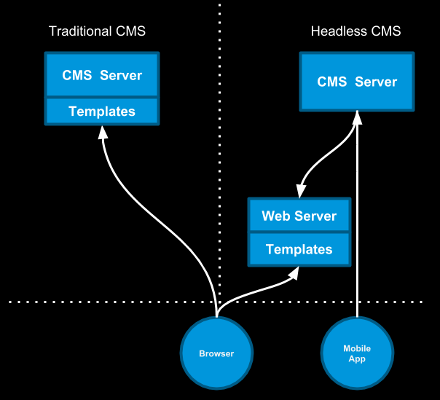
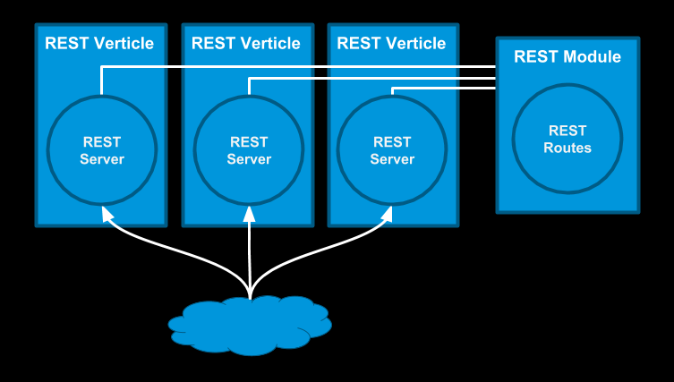
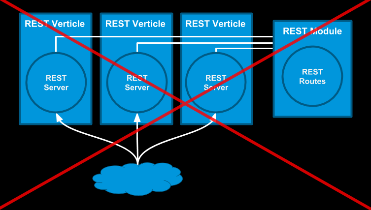
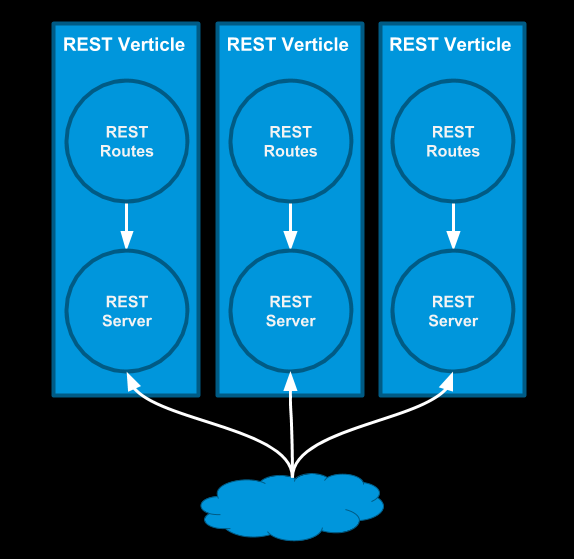
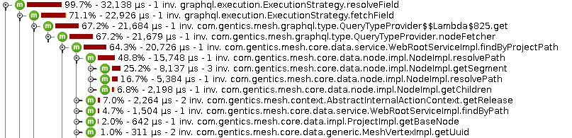

Building a Java headless CMS in 2018 using Vert.x
by
Johannes Schüth
Lead Developer of Gentics Mesh
Gentics Mesh
-
Started in 11/2014
-
First public release 04/2016
-
Open source since 07/2016
Headless CMS - Intro
-
back-end only CMS
-
Contents can be accessed via RESTful API

Headless CMS - Requirements
-
binary storage
-
searchable contents
-
image resizing
-
manage contents in tree structures
-
versioning
-
link handling
Gentics Mesh Technology Stack
Technology Stack - Requirements
-
Lightweight and modern web framework
-
Embeddable Graph Database
-
Contents must be searchable
-
Scalability
Technology Stack - 2018
-
Eclipse Vert.x
-
OrientDB Graph Database
-
Elasticsearch
-
Dagger2
-
RxJava2
-
GraphQL
-
Hazelcast
Eclipse Vert.x
Eclipse Vert.x - Intro
-
Swiss army knife for HTTP
-
Reactive Framework
-
Async API
-
Modular / General purpose
Eclipse Vert.x - Web
-
HTTP routing
-
Session, Cookie, Upload handling
-
Websockets
-
Authentication handlers
Vertx vertx = Vertx.vertx();
Router router = Router.router(vertx);
router.route("/hello").handler(rc -> {
rc.response().end("World");
});
vertx.createHttpServer()
.requestHandler(router::accept)
.listen(8080);Eclipse Vert.x - Routing
-
Sub-routers to modularize and re-use routes
Router router = Router.router(vertx);
Router subRouter = Router.router(vertx);
router.mountSubRouter("/test/", subRouter);
subRouter.route("/hello").handler(rc -> {
rc.response().end("World");
});Eclipse Vert.x - Verticles
Deployable from/via:
-
Maven
-
Fully qualified class name
-
Jar
-
Instances
public static void main(String[] args) {
Vertx vertx = Vertx.vertx();
vertx.deployVerticle(new TestVerticle());
}Eclipse Vert.x - Verticles
class TestVerticle extends AbstractVerticle {
private static final Logger log = LoggerFactory
.getLogger(TestVerticle.class);
@Override
public void start(Future<Void> startFuture) throws Exception {
log.info("Started");
startFuture.complete();
}
@Override
public void stop(Future<Void> stopFuture) throws Exception {
log.info("Stopped");
stopFuture.complete();
}Eclipse Vert.x - Pitfalls #1
for (int i = 0; i < 10000; i++) {
Vertx.vertx();
}Each Vert.x instance creates its own threadpool
Eclipse Vert.x - Pitfalls #3
-
Vert.x is very flexible
-
Multiple ways to setup a REST API project
Eclipse Vert.x - Pitfalls #3
-
Routes are setup once and shared for all verticles

Eclipse Vert.x - Pitfalls #3
-
Routes are setup once and shared for all verticles

Eclipse Vert.x - Pitfalls #3

Eclipse Vert.x - Pitfalls #3
Full example on GitHub:
-
RouterStorageclass used to collectively manage routes
Eclipse Vert.x - Pitfalls
-
Blocking the eventloop
-
Blocking the worker pool
-
Forgetting about open file handles
-
Vertx-web sharing routers between verticles
-
Using verticles to structure endpoints
-
Sharing the Vert.x webclient between verticles
-
Blocking in the executeBlocking result handler
RxJava2
RxJava2
-
Reactive Extensions for the JVM
RxJava2 - Chaining Requests
MeshRestClient client = MeshRestClient.create("localhost", Vertx.vertx());
List<String> names = Arrays.asList("Iron Man",
"Captain America", "Star Lord",
"Black Widow", "Hulk");
client.findProjectByName("MCU").toSingle().flatMapCompletable(project -> {
return Observable.fromIterable(names).flatMapSingle(name -> {
NodeCreateRequest request = new NodeCreateRequest();
request.setParentNodeUuid(project.getRootNode().getUuid());
request.setLanguage("en");
return client.createNode("MCU", request).toSingle();
}).ignoreElements();
}).subscribe();RxJava2 - Vert.x
Direct integration with Vert.x via
<dependency>
<groupId>io.vertx</groupId>
<artifactId>vertx-rx-java2</artifactId>
<version>3.5.1</version>
</dependency>import io.vertx.reactivex.core.Vertx;
…
Vertx vertx = Vertx.vertx();GraphQL
GraphQL - Intro
-
Query language used to query nested data structures
-
First released 2015
-
Developed by Facebook
-
Alternative to REST
GraphQL - Query
{
node(path: "/aircrafts/space-shuttle") {
uuid
fields {
... on vehicle {
weight
price
slug
description
}
}
}
}GraphQL - Result
{
"data": {
"node": {
"uuid": "f915b16fa68f40e395b16fa68f10e32d",
"fields": {
"weight": 22700,
"price": 192000000000,
"slug": "space-shuttle",
"description": "The Space Shuttle was a partially reusable
low Earth orbital spacecraft system operated by the U.S.
National Aeronautics and Space Administration (NASA)."
}
}
}
}GraphQL - GraphiQL
demo.getmesh.io/api/v1/demo/graphql/browser
GraphQL - Choice
Solves problems
-
Overfetching
-
Underfetching
-
Loading deeply nested data structures
GraphQL - Overfetching
The response of the server contains more information then you need
-
→ Superfluous data still needs to be loaded to complete the request
-
→ Causes additional delays and load on the system
GraphQL - Underfetching
The response of the server is lacking information you need
-
→ Execute additional requests to load the data
-
→ Causes additional delays
GraphQL - Pitfalls
-
Caching responses is not that easy
-
Error handling done via JSON
-
Not easy to create Types/POJOs for results
GraphQL - GraphQL-Java
-
Java API to create GraphQL schema
-
Github: github.com/graphql-java/graphql-java
<dependency>
<groupId>com.graphql-java</groupId>
<artifactId>graphql-java</artifactId>
<version>8.0</version>
</dependency>GraphQL - Domain Model
RootElement references Demo
public class RootElement {
private final Demo demo;
public RootElement(Demo demo) {
this.demo = demo;
}
public Demo getDemo() {
return demo;
}
}GraphQL - Domain Model
Demo object contains id and name
public class Demo {
private final String name;
private final String id;
public Demo(String id, String name) {
this.id = id;
this.name = name;
}
public String getName() {
return name;
}
public String getId() {
return id;
}
}GraphQL - Schema #1
public static GraphQLSchema createSchema() {
return GraphQLSchema.newSchema()
.query(createQueryType())
.build();
}private static GraphQLObjectType createDemoType() {
return newObject().name("Demo")
.description("A demo element")
// .id
.field(newFieldDefinition().name("id")
.description("The id of the character.")
.type(new GraphQLNonNull(GraphQLString)))
// .name
.field(newFieldDefinition().name("name")
.description("The name of the element.")
.type(GraphQLString))
.build();
}GraphQL - Schema #2
private static GraphQLObjectType createQueryType() {
return newObject().name("QueryType")
// .demo
.field(newFieldDefinition().name("demo")
.type(createDemoType())
.dataFetcher((env) -> {
RootElement root = env.getSource();
return root.getDemo();
}))
.build();
}GraphQL - Query
// .demo
.field(newFieldDefinition().name("demo")
.type(createDemoType())
.dataFetcher((env) -> {
RootElement root = env.getSource();
return root.getDemo();
}))
.build();
}
private static GraphQLObjectType createDemoType() {
return newObject().name("Demo")
.description("A demo element")
// .id
.field(newFieldDefinition().name("id")
.description("The id of the character.")
.type(new GraphQLNonNull(GraphQLString)))
// .name
.field(newFieldDefinition().name("name")
.description("The name of the element.")
.type(GraphQLString))GraphQL - GraphDB Traversal
-
Root element is starting point of query
RootElement root = …
new ExecutionInput(query, null, queryJson, rootElement, null);-
Data fetchers can load directly referenced data
…
.dataFetcher((env) -> {
RootElement root = env.getSource();
return root.getDemo();
}))
…-
GraphQL thus directly traversals the GraphDB via data fetchers
-
Highly efficient
-
Convenient for profiling
GraphQL - Profiling
-
CPU profiling very convenient
-
JProfiler example

GraphQL - Examples
Elasticsearch
Elasticsearch - Intro
-
Java based
-
Highly scaleable
-
Based on Apache Lucene
Elasticsearch - Mesh
-
Store Gentics Mesh elements in indices (Users, Nodes, Groups)
Elasticsearch - Pitfalls
-
Dynamic mapping can cause issues when input data is dynamic
-
Index types are gradually being deprecated
GraphDB
GraphDB
-
Embeddable
-
Direct vendor support for Tinkerpop API
GraphDB - Stack
GraphDB - Apache Tinkerpop
-
Open Source
-
Vendor Agnostic API
-
Supported by many graph database vendors
-
Gremlin Traversal Language
TinkerGraph graph = TinkerGraph.open();
GraphTraversalSource g = graph.traversal();
Vertex johannes = g.addV("name", "johannes").next();
Vertex tinkerpop = g.addV("name", "tinkerpop").next();
Edge egde = johannes.addEdge("presents", tinkerpop);GraphDB - Gremlin

-
Way to traverse a graph
// What are the names of Gremlin's friends' friends?
g.V().has("name","gremlin").
out("knows").out("knows").values("name")Ferma - Intro
-
Object Graph Mapper library (OGM)
-
Provides Java API to model your Graph Domain using classes
Ferma - Mesh Domain Model
Ferma - Mesh Domain Model
Ferma - Example
public class User extends AbstractVertexFrame {
public String getName() {
return getProperty("name");
}
public List<? extends User> getFriends() {
return in(KNOWS).has(User.class).toListExplicit(User.class);
}
}GraphDB - OrientDB
-
Java based Graph Database
-
First release in 2010
-
Directly supports Tinkerpop API
GraphDB - Pitfalls
-
Running DB embedded is uncommon
-
Transaction handling is still very vendor specific
Dagger2 - Dependency Injection
Dagger2
-
Dagger is a fully static, compile-time dependency injection framework for both Java.
-
Now maintained by Google (previously Square)
Dagger2 - Dependency Injection
-
Loosely coupled implementations
-
Provide dependencies in your code
-
Manage dependency hierarchies
Dagger2
-
Spring DI vs. Dagger 2
-
Reduced startup time since no complex component-scanning is involved
Dagger2 - Java #1
The component describes the root of the dependency tree
@Singleton
@Component(modules = { AppModule.class })
public interface AppComponent {
JsonObject configuration();
HelloService hello();
@Component.Builder
interface Builder {
@BindsInstance
Builder configuration(JsonObject configuration);
AppComponent build();
}
}Dagger2 - Java #2
@Singleton
public class HelloService {
@Inject
JsonObject configuration;
@Inject
public HelloService() {
}
public String getResult() {
return configuration.getString("hello");
}
}Dagger2 - Java #3
-
AppComponent → DaggerAppComponent (generated)
JsonObject config = new JsonObject();
config.put("hello", "world");
AppComponent app = DaggerAppComponent.builder()
.configuration(config)
.build();
System.out.println(app.hello().getResult());Dagger2 - Java #4
<dependencies>
<dependency>
<groupId>com.google.dagger</groupId>
<artifactId>dagger-compiler</artifactId>
<version>${dagger.version}</version>
</dependency>
</dependencies>
<build>
<plugins>
<plugin>
<groupId>org.apache.maven.plugins</groupId>
<artifactId>maven-compiler-plugin</artifactId>
<version>3.7.0</version>
<configuration>
<verbose>true</verbose>
<source>8</source>
<target>8</target>
<forceJavacCompilerUse>true</forceJavacCompilerUse>
</configuration>
<dependencies>
<dependency>
<groupId>com.google.dagger</groupId>
<artifactId>dagger-compiler</artifactId>
<version>${dagger.version}</version>
<optional>true</optional>
</dependency>
</dependencies>
</plugin>
</plugins>
</build>Dagger2 - Pitfalls
-
IDE integration can be tricky
-
Code regeneration
-
Source of dagger DI issues sometimes hard to trace
-
DI tree isolated
AppComponent app = DaggerAppComponent.builder()
.configuration(config)
.build();